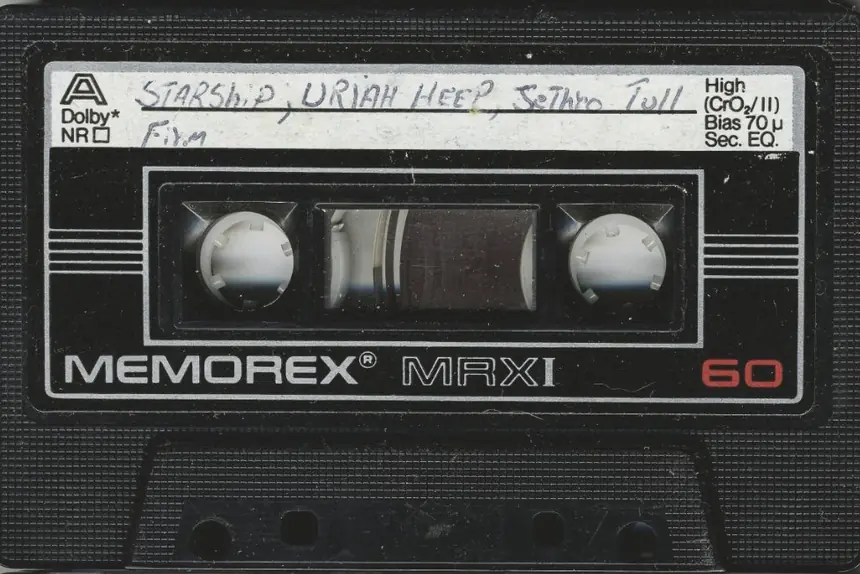
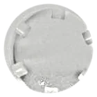
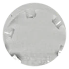

언제부터였을까요. 음악이 내 안에 스며든 때가.
중학교에 들어가며 형이 만지던 기타를 독학으로 시작하면서였는지, 형이 빽판으로 구매하여 듣던 퀸(Queen), 마이클 잭슨(Michael Jackson)을 몰래 들으면서부터인지... 아니면 대학생이던 큰누나와 겨울방학 동안 방 안을 뒹굴거리며 귤을 까먹으면서 FM에서 흘러나오는 음악 프로를 온종일 듣던 때부터였는지도 모르겠습니다.
그 시절은 지금처럼 원하는 곡을 골라서 들을 수 없어서 한 곡을 들으려면 앨범 전체를 구매해야 했습니다. 그래서 라디오를 들을 때는 좋아하는 곡이 나올 것을 대비해 항상 빈 테이프를 장전하고 언제든지 녹음을 할 수 있게 준비를 하고 음악을 들었습니다. 원하는 곡을 녹음하기 위해 디제이가 멘트를 마치자마자 녹음 버튼을 눌렀고, 어떤 때는 방송 시간이 모자라 음악이 끊기고 광고가 나와 낭패해하면서 다음을 기약하기도 했습니다.
저작권 개념이 거의 없던 때라 근처 레코드 가게에 곡 리스트와 돈을 주면 테이프에 원하는 곡을 담아서 주기도 했습니다. 그러다 용돈이라는 게 생기면서부터는 받는 돈의 대부분을 투자해 카세트테이프와 음반을 사 모으기 시작했고, 그때부터는 좋아하는 사람들에게 음악들을 직접 편집해서 전할 수 있는 무기를 가지게 되었습니다. 아날로그 플레이리스트의 시작이었습니다.
먼저 누구에게 어떤 스타일로 편집 앨범을 만들 것인지 주제와 기승전결을 꼼꼼히 정하고, 가지고 있는 컬렉션에서 컨셉에 맞는 선곡을 한 후 한 곡씩 턴테이블과 테이프 덱에 음반과 테이프를 걸고 녹음을 합니다. 그다음엔 처음부터 들어 보면서 테이프의 제목을 정하고 속지에 곡 리스트를 한 자 한 자 정성스럽게 적습니다. 특히 맘에 두고 있던 여자에게 전할 때는 열과 성을 다해 선곡과 필기에 신경을 썼던 것 같습니다.
팝과 국내 포크 음악을 주로 듣던 그 무렵, 새로운 음악의 세계를 열어 준 라디오 프로그램들이 있었습니다. 그때는 인터넷도 없어서 음악에 관한 정보를 찾을 수 있는 채널은 라디오가 거의 전부였습니다. 지금도 그렇지만 라디오는 시간이 새벽으로 갈수록 청취율에 관계없이 좋은 음악을 틀 수 있어서 진지하게 음악만을 다루는 프로그램은 대부분 자정을 지나 방송을 합니다. 그 시절의 디제이 성시완, 전영혁 등은 새로운 음악을 접할 수 있는 유일한 통로이자 해방구였습니다. 매일 프로그램을 기다리며 녹음을 하고, 새로운 음악을 발견하고, 국내 미발매나 금지된 빽판을 구매하러 이대 앞으로 달려가곤 했습니다.
지금 생각해 보면 그 모든 것들은 음악을 듣는 나만의 의식이었고 또 기쁨이었습니다.
시간이 흐르면서 모든 것들이 변했습니다. 음악은 말할 것도 없고 FM 라디오, 카세트테이프와 레코드에서 CD로, MP3로, 스트리밍으로 음악을 듣는 환경이 바뀌었습니다.
그럼에도 좋아하는 음반을 사서 가슴에 품고 집으로 뛰어가던 그 벅참을, 술 한잔 걸치고 새벽에 혼자 감동하며 듣던 음악들을 함께하고 싶은 마음은 사실 꽤 오래되었지만 이런저런 사정으로 미룰 수밖에 없었습니다.
2025년 11월 14일, 크리스 보티(Chris Botti)의 〈The Steps of Positano〉를 시작으로 지브라 베타가 첫발을 내디뎠습니다. 노트에도 밝혔듯이 이 곡은 《전영혁의 음악세계》의 시그널이자 미처 알지 못하던 새로운 세계로 나를 인도해 준 그날들에 대한 오마주입니다. 그리고 1년이 지나 다시 보티의 〈Emmanuel〉로 100곡을 채우게 되었습니다.
이 100곡짜리 편집 테이프가 누군가에게 또 다른 세계로 들어서는 문이 되었기를.
아날로그 플레이리스트
1년 그리고 100곡